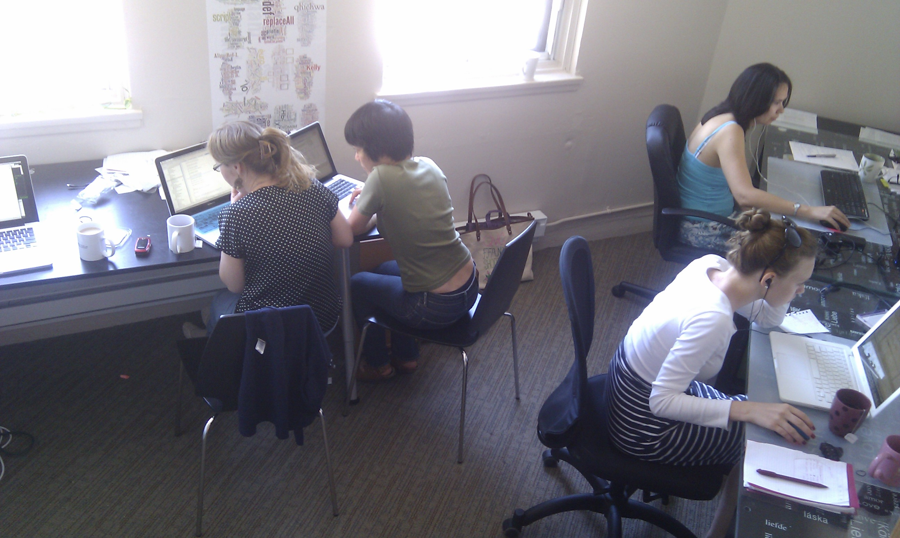

If you want more frequent updates you can find out what we are doing
by "watching" our project on GitHub. GitHub is a project management
tool for decentralized projects, kind of like Facebook for
programmers. We are busy every day, updating issues, "committing"
code and asking each other for code reviews. Anyone can add features,
ask questions or leave us comments or notes on our GitHub issue
tracker: iField
on GitHub
This week we created new Spanish screencasts to prepare for a
workshop on how to use iField to enter/import data at CAML. We didn't
publish them to YouTube yet because we didn't have good enough
internet at our hotel. They will be coming online by the end of next
week.
Demo and Feedback
The CAML room didn't have tables or a lot of space to walk around and
help participants so instead of giving a workshop and helping people
import their data we just demoed the project and answered some of the
audience's questions. Some of the most important questions we got
were about import and export file types and why we were making a new
software for field linguists. We incorporated the audiences questions
into a new slide
show and put up a spiffy website.
The demo was live
streamed by the Patzun
municipality.
Spanish screencasts for regular expressions
We also got together with other techie linguists for a "hacking"
session on Thursday night at the top of Patzun Plaza to share tools
and tips in extracting particular examples from fieldwork data using
Unix commandline tools like the recipes in Unix
for Poets. Below are some screen casts Emmy made in Spanish for some
of the Chuj speakers for how they can use regular expressions to
extract info from their transcribed child language acquisition data.
The big merge
This week we merged in the localization branch and the bug
fix/new features branch. It was a big merge and took us about a day
to do. We worked on fixing some of the resulting bugs where events
were getting lost due to a mixture of layers of help popovers and
jquery calls to modify non-existant dom elements. We got most of the
bugs fixed so that we could demo at least the ability to gloss and
find morphemes, visualize morphemes, add comments on all objects in
the system, import data from csv, add new datum fields to the corpus
either by importing or by hand, searching data etc.
July 27 2012 - Week 14 - Localization, Major refactor and bug
fixes
More help texts, toasts and localization
This week we implemented some of the beta tester requests
including importing .sf Toolbox files, adding tooltips on all the
buttons and icons to tell the user what they are for, and minimizing
some of the dashboard widgets (datalists, activity feed, unicode).
We added a user interface to add other users to your corpus,
either as administrators, or as contributers who can edit info/data,
or collaborators who can only see data. We also added a user
interface for you to change your corpus from private to public or
public to private.
We worked on localizing the app so that we can translate it
seamlessly into Spanish, in preparation for our launch at the Corpus
Approaches to Mayan Linguistics workshop in Guatemala.
Major refactor and bug fixes
We also fixed a bug in advanced search that wasn't showing all
the corpus' extra fields. (It was cloning the copurs fields too
early, now when it renders, it looks up the datum fields and session
fields so it is always up-to-date).
We refactored the way we were saving models in backbone to
create a save method that makes sure the model is saved in the right
pouch, and made sure that the model was interconnected where it
needed to be in the app (ie, if it is a new session, save it into the
corpus, and put it as the most recent session for the user so we can
re-load their dashboard if they leave etc).
We refactored the confidentiality encryption for datum in the
new datum architecture (where each field is an object, not just a
value) by adding a custom save function in the datum fields (which
gets called each time backbone tries to set something on the
DatumField object).
This week we also refactored the data list module to use a
paginated updating collections view, cleaned the app router and app
view to reduce the number of views to just 1 per edit & read
version of the models for DataList, Search, and Corpus, reduced the
number of duplicate events fireing by destroying views when we
rendered over divs, refactored search, created a new widget for
search just above the data list, made any datum matching the current
search query automatically pop up in the temporary search list for
Alan, and turned the activity feed into paginated updating collection
too.
July 20 2012 - Week 13 - Semi-automatic glossing, morpheme
segmentation, a "cute" visualization of morphemes, drag and drop
audio
Semi-automatic glossing and morhpheme segmentation
This week we built a morpheme segmenter using the user's
morpheme segmentation line to find morphemes. It takes in the
previous morpheme lines, creates linear precedence rules for the
morphemes and then stores these as rules. When it is fed a new word
(or sequence of words), it looks up in these precedence rules to find
potential matching rules. Using the matching rules it tries to build
a mini finite state machine to segment the word into morphemes. On
our sample of 76 Quechua utterances it usually misses 1-2 morpheme
boundaries per word. It is designed to keep "learning" each time the
user syncs up to the server the get the latest version of their
morpheme finder's precedence rules.
We also built an auto-glosser which takes in a word (or a line
of words) and looks up the potential glosses for each morpheme in the
lexicon (which, like the precedence rules is built from previous
existing datum). At the moment it takes the most popular gloss for
the morphemes. It also assumes you are using Leipzig conventions to
gloss your data. Like the morpheme finder, it gets smarter the more
data you gloss.
Both the morpheme finder and glosser are trained on your
corpus, but in reality any corpus can use any precedence rules or
lexicon. This is done so that if you have a large corpus of cleaned
data, you can share your precedence rules or lexicon with anyone
working on the same dialect so that they don't have to build up a
large corpus to take advantage of semi-automatic morpheme/gloss
prediction.
Report "bots" and data visualization
Using the precedence rules extracted from the corpus we were able to
do a really quick visualization using a Force
Directed graph in D3. D3 is a pretty awesome javascript
visualization library that makes SVG (ie, images that you can edit as
vectors, and print at any size!). We looked around for visualizations
and settled on a really quick simple one which lets you see the
morphemes as nodes in a connected graph, where each edge (connection)
in the graph is a linear ordering. If you hover over a node you can
see what morpheme it is, and by the color you can see which morphemes
need to be cleaned (ie ones that are abnormally long are in orange).
Later on we will make some more visualizations (hopefully something
with more linguistic info), and make it so you can click on the nodes
and see the datum that the node came from (useful if you want to use
the visualization to help you clean your data).
HTML5 audio
After some work the HTML5 audio player is finally working
properly, you can drag and drop an audio file from your computer to
the audio player in the datum you are working on. It will save the
audio file in your iField's local file storage. We still haven't set
up the audio file server so the audio files are not being synced when
you hit sync, but they are safely stored in your local iField without
a problem.
July 13 2012 - Week 12 - Import, export, comments, activity
feed all come together
This week we demoed the working features of iField (and some of
its bugs too) on Thursday. We finally got all the saving logic
running though the app and were able to implement some of the fun
features like drag and drop import, collapsing datum fields (so that
rare fields don't clutter your interface). We also added a
transparent theme for those of us who like to immerse ourselves in
landscapes rather than computer screens.
We also made a few screencasts for the beta testers to watch
before trying to use the app. We invite all beta testers to send us
sample data so we can make the app work for them. It took about 1
hour to do the regular expressions in the CSV import, but after that
it works for all CSV data. We hope it will be that easy with your
data formats.
Beta Tester Tutorials
July 6 2012 - Week 11 - Building couches on the fly, and
multiple pouches
This week we added couch generation to the authentication
server. Now when you register a new user, their couch database, roles
and permissions. We also set up a cookie system such that the user's
browser talks directly to their couch server, once the authentication
server has set it up.
This week we also struggled with fixing a design flaw: we are
switching from 1 pouch to 1 pouch per corpus. This is affecting the
way the app is loading. We need to know which pouch to save to,
before we download the corpus (a chicken and the egg sort of
problem.)
We set up the data entry area to accept 1 or more datum at a
time, which the users can set in their preferences.
We added help conventions pop overs to the data fields so that
if teams want to sent some conventions, or leave hints for each other
they can.
We also worked on adding checkboxes to the datalists so that
users can select certain datum for export etc.
June 29 2012 - Week 10 - Refactoring and Authentication
This week we redid our conventions for views and handlebars.
After this we cleaned up the handlebars divs, and got all fullscreen
buttons working, as well as made all widgets togglable between edit
and readonly.
We also set up authentication so users could login with either
a username and password, or they could use another existing login on
another service (ie, gmail, yahoo, facebook, twitter) if they didn't
want to remember yet another login and password.
We worked on pretifying the corpus details page by making the
different settings (like data fields, data status, permissions)
collapsable.
June 22 2012 - Week 9 - Search and security between black
boxes is started
Datum fields and datum states are adaptable to your corpus
This we we moved from hard coded datum fields and states that
we were using while scaffolding out backone, to truely being able to
decide on datum fields and datum states by the corpus administrator
LaTeX looking Data lists
Datalists are showing data in a LaTeX way (ie, the glosses and
words are all properly aligned so you can read the examples in a
quick glance)
Search: intersection or union
Intersection search and Union search are working. Users can
search using any of the datum fields.
Moving to EC2: Amazon Elastic Cloud
Heroku seems to want us to pay 20$ a month to use https (a
secure connection). So we switched to EC2 which we expected to do
anyway since heroku is more expensive (it is a platform as a service,
probably built off of EC2 or a similar cloud)
Securing Authentication and Database
This week we worked on getting EveryAuth to work. EveryAuth is
a node module built on top of OAuth which allows users to log in
using their other accounts, so that we have no password info for
them, and they don't have another password to remember. We also
worked on locking down the database and getting new users into the
database via the authentication hook, not just via backbone.
In this video Hisako explains what happens when the user clicks
"Sync," and how we insure that data are not modified without proper
permissions. Similar to offline games, we "replay" the edits on the
server to be sure that no one with unauthorized access can modify the
central database. What this means is that if the users have been able
to download the data while they were offline, they can edit it, but
they wont be able to sync (ie share their edits) unless they have the
proper permissions.
In this video we look at what happens when a new user comes to
the app, and how we let them play with Sapir's sample data until they
feel like making their own corpus.
June 15 2012 - Week 8 - Prettifying and getting all the Views
in place, and a new Name!

This week continued much from last week. We also prettified the
app, using Bootstrap by Twitter, a framework for cute buttons, icons
and fonts. There is still the import and search user stories to
complete and modules to connect. We connected the modules to PouchDB,
the portable offline version of CouchDB. We are still working on
getting the Offline corpus to work on Android using TouchDB. As far
as we know, we are the 3rd large project to use TouchDB, it's
implementation of CouchDB might not even be complete so we might have
to help them out so that we can use it. The PouchDB folks have also
found out we were watching them and have also been implementing
things around the clock. The database that PouchDB is using
(IndexedDB) is an HTML5 specification that wasn't even implemented
until 6 months ago in December. We are using a special advance
developers version of Chrome that will be availible only in August,
when we launch. Talk about being on the bleeding-edge of development!
In addition, this week we created a new folder entitled docs
which contains files that are designed to help those interested who
want to use this project for their data collection and need a
methodology section for their grant (or want to add a programming
budget to their grant app to finish the "dream modules").
If you're a fieldlinguist and you are curious about our app, these
docs are for you. You can get either the .pdf or the .tex files. In
these files, you will find information about our goals and
objectives, evaluation metrics, and estimations of time and cost. https://github.com/iLanguage/iField/tree/master/docs
Making Data Fields and Session Fields that truely adapt to
your data
We also stated the refactor (the re-doing) of the Datums and
Sessions. Here is Hisako explaining how the Datums and Sessions will
"learn" and adapt to the team that is building their corpus.
June 8 2012 - Week 7 - Connecting the modules
This week implemented more views and clarify the connections
between different modules. We started with what Emmy coined
"boardcasts" showing the control flow for 3 different "User Stories."
We have begun refactoring the site to reflect the ER diagram.
Additionally, we connected our modules to IrisCouch, a hosting
service for databases (a couch in cloud, it costs $1 per gigabite per
month). In addition, we implemented pagination for the datalist view.
Page Load Sequence Diagram
Data Entry Sequence Diagram
Import Sequence Diagram
Paginator and the DataListView Sequence Diagram
Here is a boardcast about the sequence of events happening in
the paginator with explaination in terms of the DataList for our
application. DataLists are like favorites where users can put
together a list of datum for a special purpose like creating a
handout for a conference, or a list of data to prepare for a session
with a consultant etc. DataLists can be pretty big, so we need to
"paginate" them. we have decided to paginate them by sorting the most
recent first.
Here is a screencast that looks at the code that corresponds to
the boardcast.
Getting from Handlebars to the App
In implementing the connection between views and modules we
want to start fleshing out the views with handlebars and integrating
them into the app. This video will start you out with your handlebars
template and takes you through backbone to finally render the view.
This second video is a more complicated example involving
partials.
June 1 2012 - Week 6 - Testing the modules
This week we set up the corpus database using CouchDB hosted on
IrisCouch and wrote more testing code which specifies what functions
the module must complete. Tests serve as documentation
for what each class (you can think of classes as module) does. Tests
also serve as sample client code for future developers when they want
to use the modules, they can look at the module's tests to how to use
the module's functionality.
We also set up a testing environment for embedding widgets such as
{DataList Widget, Data Search Widget, Activity Feed Widget} into
a WordPress post. Note, the testing post is private, use password
"fieldlinguistics" to see it. The web widgets will allow linguists to
let others interact with their data on their blogs.
We have an initial implementation of ActivityFeeds, Datum
Menus, the Lexicon indexer and the Confidentiality encryption using
the AES encryption standard approved by the US Federal Government.
We wrapped up the week with a cleaned up diagram for how the
modules are related, in the form of an Entity Relationship Diagram.
Entity Relationship Diagram
May 18 2012 - Week 5 - Documenting the modules
This week we finished the documentation
for what each class (you can think of classes as module) does.
We also published the Software
Requirements Specification and put up a public Wiki page with a
description, team members and non-technical details telling the world
what we are up to.
May 11 2012 - Week 4 - Three Black Boxes
Continuous Build Server is up: Meet our butler, Jenkins
Jenkins is set up and building the project every time someone
commits to GitHub. When the build fails, Jenkins emails the group
(this encourages us to do code review and make sure at least two
pairs of eyes see the code that get checks in.) Jenkins is public so
anyone outside the project can also see if the builds are succeeding.
If the builds succeeds Jenkins is also continuously deploying
to the actual website.
Corpus Server is a CouchDB server running on IrisCouch (it
can run on a department server too).
Screen cast explaining the coarse grained architecture
May 4 2012 - Week 3 - Gimp User Interface Designs
The main dashboard can be very cluttered: have a team feed,
multiple data entries, and the drop down quick search (a la
spotlight), This one is the Llama skin:
The data entry page could be much less cluttered, here is an
example of the three dots extended:
April 27 2012 - Week 2 - Paper Prototypes
We got together and started desigining the UI. Below are this
week's deliverables.
General Layout-- each component (newsfeed, list, and datum
entry page can be moved and minimized)
The menu bar now has a search bar and preferences.
In addition, there is a new dropdown menu for data.
Search bar expands down into the list view.
The list view will have check boxes and datum Menu bar.
This is the datum menu bar. It will only appear when you mouse
over
There will be a little keyboard button underneath the phonetic
and orthography lines. In addition, we will give users the option of
typing in TIPA that will automatically insert the correct character.
The advanced search will look exactly like datum page.
The News Feed gives team notifications.
These preferences will be accessed from wrench.
Here are other various preferences and permissions.
April 20 2012 - Week 1 - Clickable Prototype
The clickable prototype was written in HTML and CSS, it showed the
menus and some of the import export. It was replaced above with the
paper prototypes.